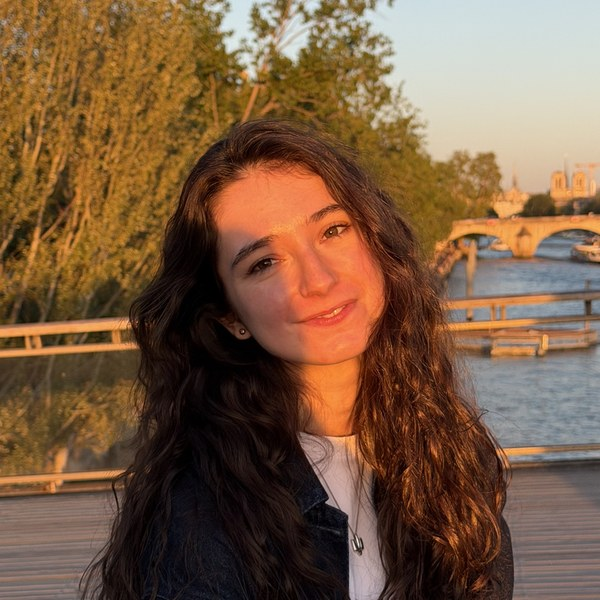
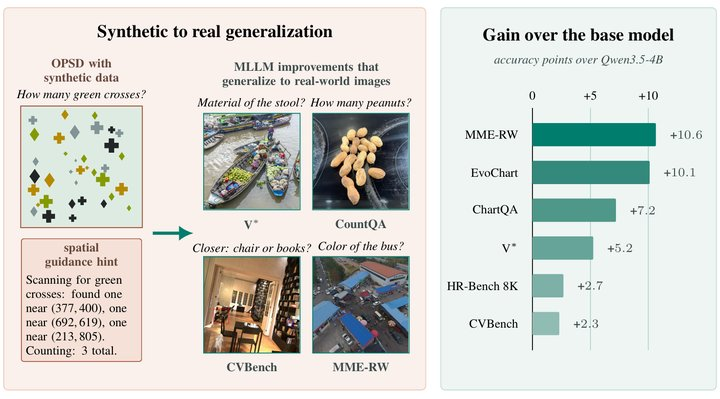
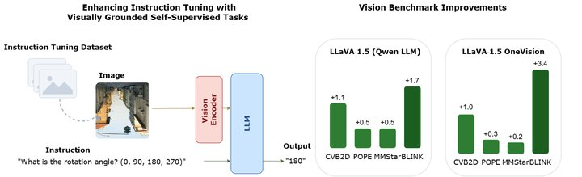
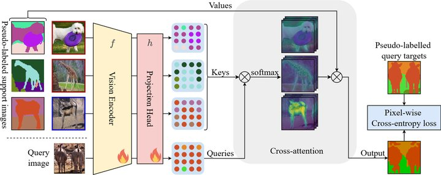
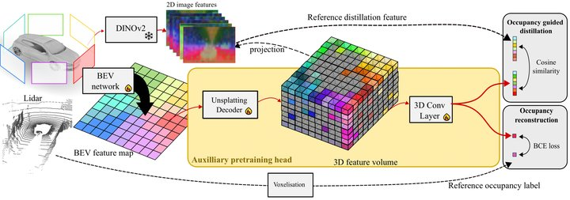

Sophia
Sirko-Galouchenko
PhD student in computer vision
Sorbonne Université & valeo.ai
I am a PhD student in the MLIA team at Sorbonne Université (ISIR) and valeo.ai in Paris, supervised by Nicolas Thome, Andrei Bursuc and Spyros Gidaris.
My research focuses on using self-supervised learning (SSL) to improve fine-grained image understanding in vision models and multimodal LLMs.
Before my PhD, I graduated from the MVA Master's (Mathématiques, Vision et Apprentissage) at ENS Paris-Saclay, and I got a Bachelor's degree in computer science and mathematics from Université Paris Dauphine.
News
- Dec 2026Presenting V-GIFT at NeurIPS 2026 in Paris. See you there!
- Oct 2026Where-OPD is out on arXiv, along with its code and models 🚀!
- 2026V-GIFT is accepted to NeurIPS 2026 🥳!
- Apr 2026V-GIFT is out on arXiv 📜!
- Oct 2025Presented DIP at ICCV 2025 in Honolulu, Hawaii 🌺
- 2025DIP is accepted to ICCV 2025. See you in Hawaii ✨!
- Jun 2025DIP is out on arXiv 🚀!
- 2024Started my PhD at Sorbonne Université (ISIR) and valeo.ai 🎉
- 2024Attended the ELLIS Winter School on Foundation Models (FoMo) in Amsterdam 🎓
- 2024OccFeat is accepted to the CVPR 2024 Workshop on Autonomous Driving 🚗
- Apr 2024OccFeat is out on arXiv 📜
- Oct 2023Volunteered at ICCV 2023 in Paris 🙋♀️
Publications

On-policy self-distillation using synthetic scenes and visually grounded textual hints improves visual perception.
@article{sirko2026opd,
title={Where-OPD: Spatially Guided On-Policy Self-Distillation of MLLMs with Synthetic Scenes},
author={Sirko-Galouchenko, Sophia and Wysoczanska, Monika and Bursuc, Andrei and Thome, Nicolas and Gidaris, Spyros},
journal={arXiv preprint arXiv:2610.02117},
year={2026}
}
SSL tasks are turned into visual instruction tuning data for MLLMs and added during the instruction tuning stage. Even a small amount of visually grounded SSL-style supervision can go a long way toward unlocking better visual capabilities in MLLMs.
@article{sirko2026boosting,
title={Boosting Visual Instruction Tuning with Self-Supervised Guidance},
author={Sirko-Galouchenko, Sophia and Wysoczanska, Monika and Bursuc, Andrei and Thome, Nicolas and Gidaris, Spyros},
journal={arXiv preprint arXiv:2604.12966},
year={2026}
}
Unsupervised post-training that improves dense in-context scene understanding over DINOv2.
@inproceedings{sirko2025dip,
title={Dip: Unsupervised dense in-context post-training of visual representations},
author={Sirko-Galouchenko, Sophia and Gidaris, Spyros and Vobecky, Antonin and Bursuc, Andrei and Thome, Nicolas},
booktitle={2025 IEEE/CVF International Conference on Computer Vision (ICCV)},
pages={4264--4274},
year={2025},
organization={IEEE}
}
Self-supervised pretraining for bird's-eye-view networks in autonomous driving, combining occupancy prediction with distillation from DINO features.
@inproceedings{sirko2024occfeat,
title={Occfeat: Self-supervised occupancy feature prediction for pretraining bev segmentation networks},
author={Sirko-Galouchenko, Sophia and Boulch, Alexandre and Gidaris, Spyros and Bursuc, Andrei and Vobecky, Antonin and P{\'e}rez, Patrick and Marlet, Renaud},
booktitle={2024 IEEE/CVF Conference on Computer Vision and Pattern Recognition Workshops (CVPRW)},
pages={4493--4503},
year={2024},
organization={IEEE}
}